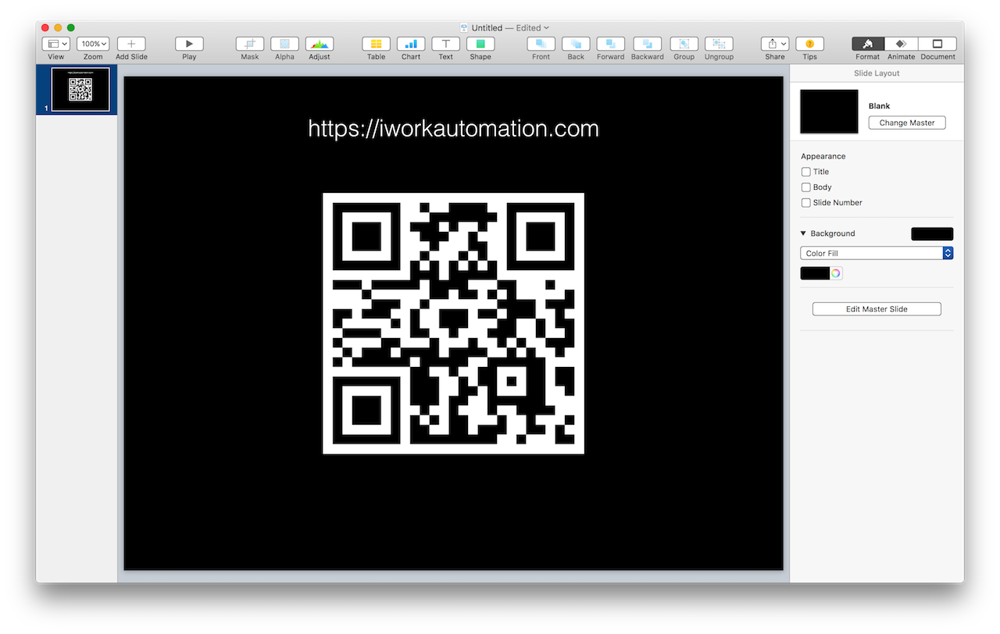

This handy script uses AppleScriptObjective-C to create a QR code image based upon the text contained on the clipboard, and imports the created image onto the current slide. It’s a very useful tool for those that often display URLs in their presentations.

NOTE: The following script is written using AppleScriptObj-C, an incredibly powerful fusion of the AppleScript and Objective-C languages. To acquire detailed training materials and examples about AppleScriptObj-C visit: macosxautomation.com/applescript/apps
To use this script, simply copy the URL or text to convert into a QR code to the clipboard, and then run the script. A QR code image will be created and added to the current slide.
error "There was a problem writing the image object to file."
147
end if
148
endwriteNSImageObjectToFileAsJPEG
Add Link to Shared Photos Album to Keynote as a QR Code
Here’s a version of the example script, saved as an Automator system service for Photos, that converts the selected link to a shared album into a QR code placed on the current slide in Keynote.
DOWNLOAD the Automator workflow file and double-click it to install on your computer. Right-click the selected shared link in Photos, and select the service from the contextual menu.
Mention of third-party websites and products is for informational purposes only and constitutes neither an endorsement nor a recommendation. MACOSXAUTOMATION.COM assumes no responsibility with regard to the selection, performance or use of information or products found at third-party websites. MACOSXAUTOMATION.COM provides this only as a convenience to our users. MACOSXAUTOMATION.COM has not tested the information found on these sites and makes no representations regarding its accuracy or reliability. There are risks inherent in the use of any information or products found on the Internet, and MACOSXAUTOMATION.COM assumes no responsibility in this regard. Please understand that a third-party site is independent from MACOSXAUTOMATION.COM and that MACOSXAUTOMATION.COM has no control over the content on that website. Please contact the vendor for additional information.